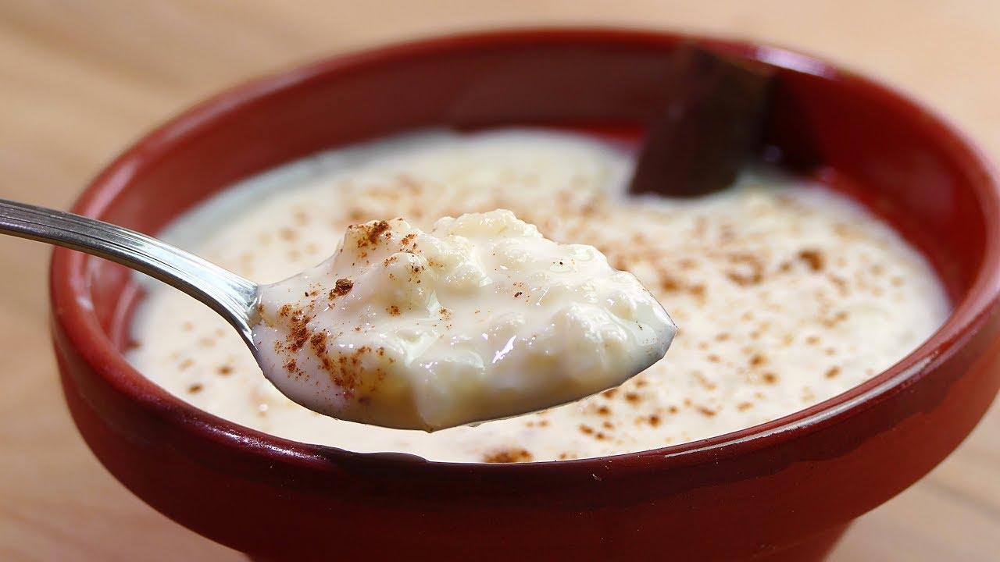
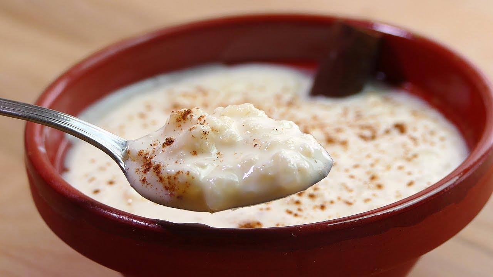

Especialidades de la casa
- Atolillo
- Tres leche
- Pastel
- Pio V
Receta de la casa para hacer arroz en leche en casa y disfrutar con sus seres queridos o compartir con amigos.
Receta de la casa para hacer arroz en leche en casa y disfrutar con sus seres queridos o compartir con amigos.
